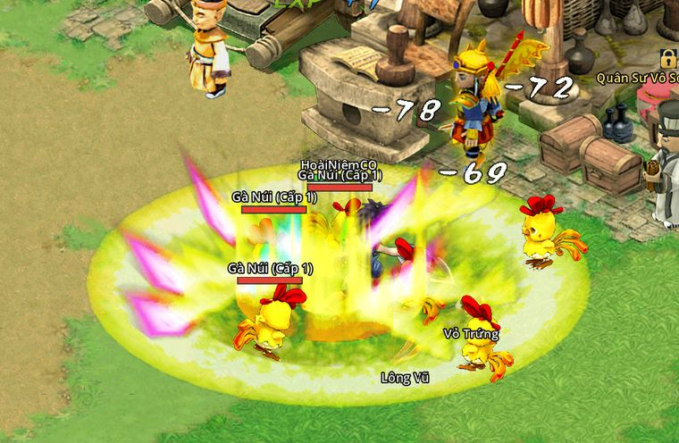

Đào Hoa Nguyên
Cận chiến, ngoại công, đỡ đòn- Sư phụ: Vô Ức
- Đào Nguyên Thôn (80, 54)
- Quyền sáo
- Dùng Nguyên Khí
Đánh tay không, đòn trúng tích Nguyên Khí rồi xả bằng chiêu mạnh. Hợp đánh tay đôi hoặc đứng trước kéo quái cho đội.

Thái Cổ Quyền
Dồn sát thương
- Cấp 10Hắc Hổ Đào Tâm: đấm nhanh, trúng thì thêm Nguyên Khí.
- Cấp 15Thốn Kình: Trọng Thương, giảm công và thủ địch.
- Cấp 20Phong Ma Quyết: Trầm Mặc, giảm công quái.
- Cấp 30Khí Tráng Sơn Hà: xả 3 đến 10 Nguyên Khí, mỗi điểm thêm 10 % sát thương.
- Cấp 40Nhất Quyền Bạt Sơn: xuyên thủ, quái dưới nửa máu chắc chắn bạo kích. Hồi 10 giây.
Đào Hoa Hộ Thể
Đỡ đòn, giữ quái
- Cấp 10Lạc Kích: phá giáp, cả đội đánh mạnh hơn, hút thù hận gấp đôi.
- Cấp 15Khiêu Trận: đánh vùng, khiêu khích quái quanh mình.
- Cấp 20Đào Hoa Lạc Ảnh: dựng trận giam địch.
- Cấp 30Phản Tỏa: phản sát thương 10 giây, kèm một đòn phản kích.
- Cấp 40Đại Hải Vô Lượng: ba đợt sóng hình nón, đợt cuối đẩy lùi và làm choáng. Hồi 12 giây.
Chiêu chung
- Dã Tính Cuồng Lực (thế công) hoặc Kim Cương Thân Pháp (thế thủ): chỉ bật một thế.
- Nguyên Khí Quy Nguyên: hồi 6 Nguyên Khí, hồi máu dần.
Trấn phái: Hàng Long Hữu Hối Chưa mở
Bản 5.2 Nhánh Hộ Thể lì hơn khi bị vây: nội tại Kim Chung Tráo thêm, bị từ 2 quái trở lên đánh trong 3 ô thì mỗi con giảm 3 % sát thương mình nhận (tối đa 5 con, 15 %) và cứ 3 giây hồi thêm 1 Nguyên Khí.
Bản 5.3 Hai nhánh đổi tên theo võ công bản gốc, Thái Cổ Thần Quyền (trước Thái Cổ Quyền) và Đào Hoa Tâm Pháp (trước Đào Hoa Hộ Thể). Khí Tráng Sơn Hà mỗi điểm Nguyên Khí thêm 15 % (trước 10 %), hồi 8 giây; Nhất Quyền Bạt Sơn bỏ qua 40 % thủ (trước 30 %), hồi 6 giây; Đại Hải Vô Lượng hồi 8 giây. Hàng 6 nhánh Tâm Pháp thành Sư Tử Gầm: gầm 3 ô quanh mình, tối đa 6 kẻ, choáng 1,5 giây và khiêu khích 6 giây, hồi 12 giây. Chiêu nối nhau: Ba Động Quyền làm Chậm 4 giây (trước 2) rồi Không Thủ Nhập Bạch Nhẫn thêm 20 %; Phong Ma Quyết làm Trầm Mặc rồi Khí Tráng Sơn Hà thêm 15 %. Hồi chiêu từng chiêu: Làm lại chiêu 7 phái.